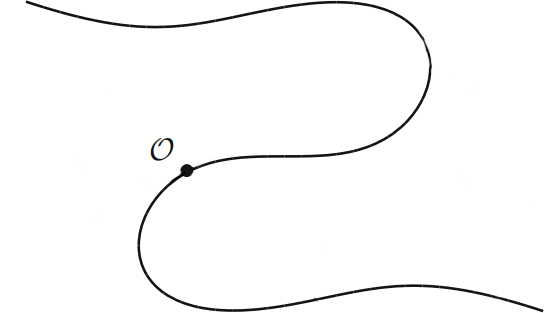
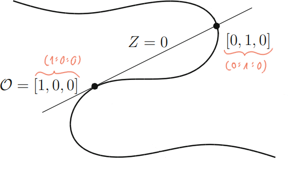
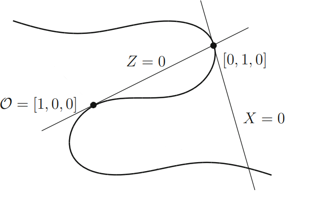
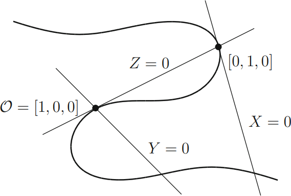

Erinnerung:
Mordell's Theorem
Wenn eine nicht singuläre rationale kubische Kurve in der
Ebene einen rationalen Punkt hat, so ist die Gruppe der
rationalen Punkte endlich erzeugt.
möchten wir beweisen!
Um beweisen zu können, müssen wir unsere
Ausgangssituation vereinfachen!
Kubische Kurve:
\[C:ax^3+bx^2y+cxy^2+dy^3\\+ex^2+fxy+gy^2+hx+iy+j=0\]
allgemeine Weierstraß-Normalform:
\[C: P=0 \to C': y^2=x^3+a'x^2+b'x+c'\]
1.3
Weierstraß-Normalform
Weierstraß-Normalform |
| klassisch |
allgemein |
| \(y^2=4x^3-\textcolor{#87ba83}{g_2}x-\textcolor{#87ba83}{g_3}\) |
\(y^2=x^3+\textcolor{#f06f48}{a}x^2+\textcolor{#f06f48}{b}x+\textcolor{#f06f48}{c}\) |
Wir möchten demnächst nur noch elliptische Kurven der Form
\[y^2=x^3+ax^2+bx+c\] betrachten müssen
\(C\) kubische Kurve \(\xrightarrow[\text{Äquivalent}]{\text{birational}}\) WNF
Betrachte dazu folgende Konstruktion:
Schritt 1
Sei \(C\) eine kubische Kurve im Projektiven Raum
mit \(\mathcal{O}\), einem rationalen Punkt auf \(C\).
Verändere/wähle Achsen so, dass wir eine einfachere Form
erhalten.

Schritt 2
Wir nehmen die Tangente von \(\mathcal{O}\) und verwenden
sie als unser \(Z=0\), also unsere \(Z\)-Achse.

Schritt 3
Diese Tangente schneidet die Kurve an einer weiteren Stelle
\((0:1:0)\) und die Tangente an dieser Stelle wird unsere
\(X\)-Achse.
Wenn \(\mathcal{O}\) ein Wendepunkt (point of inflection) ist,
können wir eine beliebige Gerade wählen, welche nicht durch
\()\mathcal{O}\) geht.

Schritt 4
Zuletzt wählen wir noch eine beliebige Gerade, welche durch
\(\mathcal{O}\) geht als unsere \(Y\)-Achse

Schritt 5
\[\underbrace{x=\frac{X}{Z}, \quad y=\frac{Y}{Z}}_{\text{Projektive Transformation}}\]
Neue Form der Gleichung:
\[xy^2+(ax+b)y=cx^2+dx+e\]
Auf beiden Seiten mit \(x\) multiplizieren:
\[(xy)^2+(ax+b)xy=cx^3+dx^2+ex\]
Schritt 6
Benenne \(xy\) in \(y\) um:
\[y^2+(ax+b)y=cx^3+dx^2+ex\]
Benenne \(\left(y-\frac{ax+b}{2}\right)\) in \(y\)
(lineare Transformation) um, was effektiv durch
quadratische Ergänzung
unser Resultat:
\[y^2 = \text{kubische Funktion in } x\]
Betrachten wir ein Beispiel:
\[ u^3+v^3=\alpha, \quad \alpha \in\mathbb{Q} \]
Schritt 1
- Projektivieren: \(U^3+V^3 = \alpha W^3\)
- Finde \(\mathcal{O}=(1:-1:0)\)
- Weil \(\mathcal{O}\) ein inflection point ist, können
wir \(X=0\) fast frei wählen
Wir erhalten: \[x=\frac{12\alpha}{u+v}, \quad y=36\alpha\frac{u-v}{u+v}\]
Schritt 2
Durch Umformungen erkennen wir, dass \(x,y\) die WNF erfüllen:
\[y^2=x^3-432\alpha^2\]
Explizit können wir dies nachprüfen, indem wir \(u,v\) einsetzen:
\[
- \frac{1728 \alpha^{3}}{\left(u + v\right)^{3}} + \frac{1296 \alpha^{2} \left(u - v\right)^{2}}{\left(u + v\right)^{2}} + 432 \alpha^{2}
\]
Ausmultiplizieren ergibt:
\[ \displaylines{- \frac{1728 \alpha^{3}}{u^{3} + 3 u^{2} v + 3 u v^{2} + v^{3}} + \frac{1296 \alpha^{2} u^{2}}{u^{2} + 2 u v + v^{2}} \\- \frac{2592 \alpha^{2} u v}{u^{2} + 2 u v + v^{2}} + \frac{1296 \alpha^{2} v^{2}}{u^{2} + 2 u v + v^{2}} + 432 \alpha^{2}} \]
Und zuletzt Vereinfachen:
\[ \frac{1728 \alpha^{2} \left(- \alpha + u^{3} + v^{3}\right)}{u^{3} + 3 u^{2} v + 3 u v^{2} + v^{3}} \]
Wir sehen also, dass wenn \(y^2=x^3-432\alpha^2\) eine Lösung
hat, so auch \(u^3+v^3=\alpha\).
Schritt 3
Wir können den Prozess auch rückwärts gehen und \(u,v\) durch
\(x,y\) darstellen, mit:
\[u=\frac{36\alpha+y}{6x}, \quad v=\frac{36\alpha-y}{6x}\]
Wenn wir rationale Lösungen für \(y^2=x^3-432\alpha^2\) haben,
so haben wir auch rationale Lösungen für \(u^3+v^3=\alpha\) und
umgekehrt auch.
Es gibt nur endlich viele Ausnahmen (z.B. wenn \(u=-v\))
aber diese sind schnell zu finden.
Fazit:
Rationale Punkte auf \(C\) stehen 1:1 zu rationale Punkte
auf WNF von \(C\) für jede kubische Kurve \(C\)
(Bis auf endlich viele Ausnahmen)
Das Problem der rationalen Punkte auf kubischen Kurven
mit mindestens einem rationalen Punkt wurde
deutlich einfacher!
Wir müssen nur noch die rationalen Punkte auf der WNF
betrachten!
Transformationen haben gerade Linien nicht
auf gerade Linien geschickt.
Wird Gruppenstruktur (siehe. Seminar Daniel) erhalten?
Ja! Unsere Transformationen sind also ein (nicht trivialer)
Gruppenhomomorphismus.
Additionsgesetz ist intrinsisch zur Kurve, also
invariant unter birationaler Transformation.
Beweis? Wurde nicht gegeben.
Geschichte
"Elliptische Kurven" (birational äquivalent zu
\(y^2=f(x)=x^3+ax^2+bx+c\) mit \(f(x)\) verschiedene komplexe Wurzeln)
entsprangen dem Errechnen der Bogenlänge von Ellipsen.
Um Länge von Ellipse zu berechnen, muss man eine Funktion
\(y=\sqrt{f(x)}\) integrieren.
Durch
\[y^2=\underbrace{x^3+ax^2+bx+c}_{f(x)}, \quad a,b,c\in\mathbb{Q}\]
können wir elliptische Kurven
genauer verstehen:
Nach Klassifikation der irreduziblen Polynome in
\(\mathbb{R}[x]\) muss \(f(x)\) mindestens eine relle Wurzel
\(\alpha\) haben.
\(f(x)\) kann jedoch auch 3 relle Wurzeln haben. Dann haben wir
zwei zusammenhängende Teilmengen.
(Angenommen Wurzeln sind paarweise verschieden)
Wenn Wurzeln nicht paarweise verschieden sind, also
\(f(x)\) nicht quadratfrei ist, so muss die
Kurve:
\[C:\underbrace{y^2-f(x)}_{F(x,y)}=0\]
Singularitäten besitzen!
Beweis
\[\frac{\partial F}{\partial x}=-f'(x), \quad \frac{\partial F}{\partial y}=2x\]
Singularitäten können also nur auf der \(x\)-Achse vorkommen.
Also wenn \((x_0,y_0)\) Singularität, so \(y_0=0\).
Daher \(f(x_0)=y_0^2=0\) und \(f(x)\) und \(f'(x)\) haben
gemeinsame Wurzel bei \(x_0\).
Welche Arten von Singularitäten können auftreten?
| \(f(x)\) |
| doppelte Wurzel |
dreifache Wurzel |
| komplexe Richtung der Tangente |
reelle Richtung der Tangente |
|